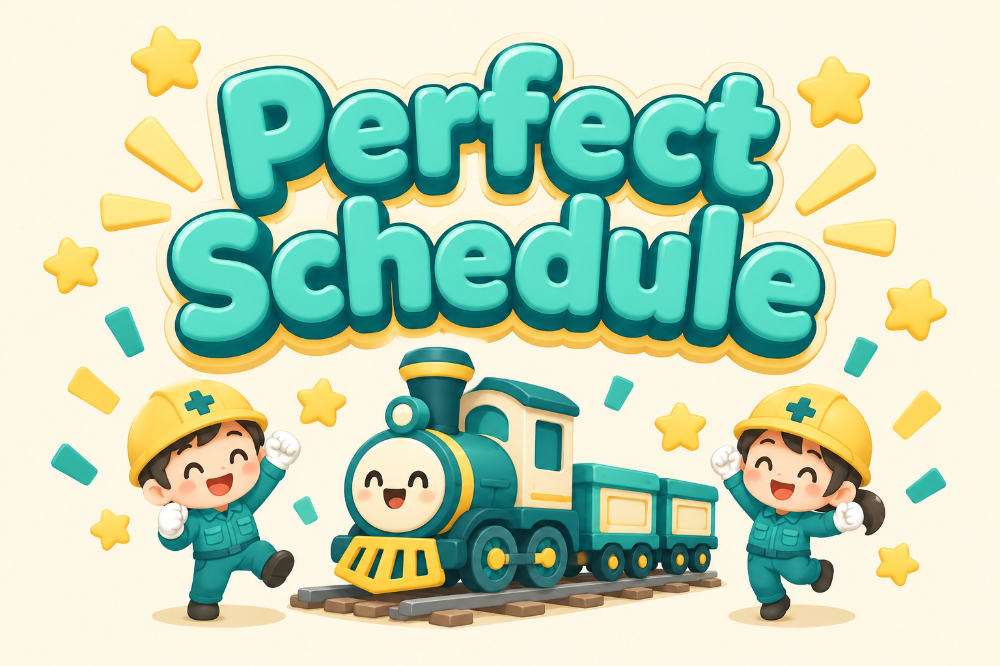
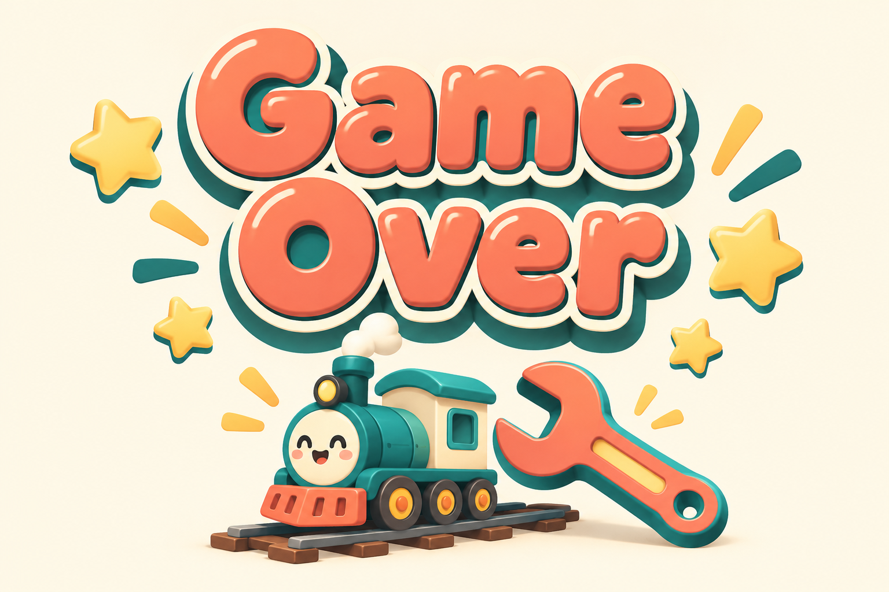

人・設備・材料・納期・資金をつなぐ、鉄道車両工場の経営シミュレーション。広い工場を探索し、受注から出荷までの計画を実現する。
営業に届く受注、設計室に運ばれる伝票、資材の到着を待つ加工場。眺めるだけでも状況がわかり、増員・経路変更・着工予約・先行手配で流れを変えられるゲームです。
設計者は製図し、作業者は機械や工具を使う。工程の進み具合に合わせて、運ばれるものが伝票・素材・部品・車体へ変わります。
受注を絞る、詰まる工程へ増員する、材料を先に持つ、着工を遅らせる。納期と資金の両方を見て判断します。
出荷の利益で倉庫、工場、保全設備、用地へ再投資。増設後は人を配置し、工場全体の能力を整えます。
主対象は工場経営ゲームを楽しみたい一般プレイヤー。生産管理の専門知識を前提にせず、短いシナリオの中で「自分の判断で改善できた」と感じられることを目指します。
受注時の支払いはありません。予約した着工時刻、仕掛上限、設計の空きがそろうと、営業から受注伝票を運びます。設計完了後は設計室を解放し、材料の到着を待ちます。
通常の材料リードタイムは車種ごとに24〜42ゲーム秒。設計後に材料費を支払って調達するか、同じ車種の先行手配を使います。先行在庫が入荷済みなら調達待ちは不要。入荷前なら元の到着予定を引き継ぎます。
材料は1両分のキットとして購入し、先行手配は入荷待ちを含め12両分まで。入荷後は保管料がかかるため、先に買えば常に有利とは限りません。加工工場が満杯なら資材置場で待機します。
各生産設備は同時に1両を作業し、運搬予約を含め2両の入力待ち枠を持ちます。次の工程が満杯なら、中間倉庫へ退避するか、前工程の完了品が設備をふさいで待ちます。中間倉庫は1棟6両、最大18両。手動退避した中間品は出庫再開まで保持します。
並列設備がある工程は標準経路と受注別経路を選択できます。自動経路は負荷と運搬距離から選択。指定設備が使えなければ待ちます。すでに出発した運搬と作業中の行き先は保持します。運搬は建物を避けた最短経路を通り、距離に応じて時間がかかります。
受注済み案件を、現在の人員、設備、経路、待ち枠、着工予約、材料調達、先行在庫、給与・保管料から予測します。予約を遅らせれば開始線も後ろへ移動。部分着工の受注は未着工分だけを延期し、全両着工済みなら予約変更を無効にします。
ガントは「今から何秒後」を固定の時間幅で表示し、横スクロールで先の工程へ移動。材料調達を独立した帯で示します。人員・経路・在庫を変えると再計算します。最適化ではなく現時点の予測で、今後の商談・ランダムイベント・追加の修理操作は含みません。
| 項目 | ゲームのルール | 判断のポイント |
|---|---|---|
| 採用・給与 | 採用350G / 人、給与0.48G / 人・秒。未配置でも給与が必要。減員200G。 | まず制約工程への配置を見直す。 |
| 作業能力 | 1人0.55倍、2人1倍、3人1.33倍、4人1.66倍。設備改良で能力を追加。 | 1棟につき最大4人。増設後も人を配置。 |
| 資材置場 | 入荷後から出庫まで0.18G / 両分・秒。 | 必要な車種を必要な時期に先行手配。 |
| 工程前・中間倉庫 | 工程待ち0.60G、中間倉庫0.25G / 両・秒。 | 安く退避できても、継続的な制約は能力改善が必要。 |
| 完成品倉庫 | 納期まで0.90G / 両・秒。納期に出荷して入金。 | 早すぎる完成を着工予約で減らす。 |
| 故障・保全 | 修理800G・16秒。予防保全300G・8秒。保全工房への配置で劣化軽減。 | 修理中の投入と人員も見直す。 |
| 失敗 | 運転資金が0Gに達するとGame Over。 | 未払い材料費、給与、保管料を残して投資。 |
入荷待ち・資材・仕掛・完成品の材料費は在庫原価として扱い、出荷時に売上原価へ移します。助成と設備投資は営業利益に含めません。税金、減価償却、借入は試作では省略しています。
| シナリオ | 初期資金 | 目標・体験 |
|---|---|---|
| 潮風の車両工場 | 18,000G | 4章で最初の出荷、倉庫、故障復旧、増設を学ぶ。最終目標は生産工場5棟・用地拡張・出荷22両・利益18,000G。 |
| 注文が押し寄せる街 | 24,000G | 短い納期の受注波。20両出荷・営業利益18,000G。 |
| 止まった工場を救え | 20,000G | 加工設備の故障から立て直す。修理2回・12両出荷・営業利益8,000G。 |
| 海を渡る資材 | 26,000G | 材料リードタイム2倍。先行手配の活用4両・納期内8両・営業利益6,000G。 |
| 特急デザイン室 | 27,000G | 設計負荷が高い初期受注。設計室2棟・納期内10両・営業利益8,000G。 |
| 時刻表に合わせて | 12,000G | 遠い納期と限られた資金。着工予約を工夫し、納期内6両・営業利益9,000G。 |
| 自由に育てる工場 | 60,000G | 達成目標なし。配置・増設・雇用・在庫・経路を実験。 |
設備の異音、臨時の高単価受注、改善提案、運搬支援のイベントが発生します。目標達成後には「Perfect Schedule」の専用画像がポップに登場。資金切れには「Game Over」の画像が現れ、経営帳簿を見直して再挑戦できます。

章の助成を積み重ね、シナリオクリアでお祝い。クリア後も工場を継続できます。

資金切れの原因を帳簿で振り返り、別の計画で再挑戦します。
資材シナリオでは先行手配を、設計シナリオでは並列化を、時刻表シナリオでは着工予約を試します。新しい工場は「設定 → シナリオ選択」から。
ゲーム上部は運転資金と出荷量のみ。工場マップを主役にし、目標・通知・全域地図は折りたたみます。スマホ横持ちは管理画面を横へ、縦持ちは下へ配置し、マップと情報が同じ場所を覆わない構成にします。
1本指ドラッグで縦横移動、2本指で拡大縮小。設備をタップして人員・修理・改良を操作。PCはホイール、ドラッグ、矢印キーにも対応。管理画面では一時停止し、落ち着いて計画できます。
工程間のアイコンは加工前の姿を使い、右上に対象車両の小さな印を付けます。納期の残り秒数は大きく表示。完成品倉庫の表示は3アイコンまでとし、4両以上はアイコン列右上に総保管数量を表示します。数量の省略で保管料や出荷量が変わることはありません。
作業中は製図・加工・組立・検査の動作を2姿勢で表現し、小さな画面でも見える最低サイズを確保。停止・故障・保全中は止まり、動きを減らす設定にも従います。音声とBGMは旧作の素材を継続します。
旧作factory-simulatorの確認済みコードから、catalog.js、audio.js、music.js、車両8種・作業者・音源・アイコンを流用。生産シミュレーション、広域マップ、管理画面、ガント、シナリオ、保存形式を新しくしています。
HTML・CSS・JavaScriptの構成で、サーバーのゲーム処理や外部APIは不要。0.1秒刻みのシミュレーションをガント予測にも使います。38×30マス、最大36施設、製造中12両、従業員60人。旧作のコードと保存データは変更しません。
端末のブラウザに15ゲーム秒ごと・操作時・画面を離れる時に保存。保存形式1・2を形式3へ引き継ぎ、旧形式で購入済みの材料は再請求しません。端末間の同期はありません。
新作コード · 費用・仕様・検証結果の詳細 · 流用記録
伝票と材料の出発地、リードタイム、着工延期、在庫の二重課金防止、給与、保管料、人員・経路、保存の引き継ぎを確認。
既定の操作戦略で全シナリオをクリア。資金・材料原価・数量が一致することも確認しました。
開始予約と材料の到着が直感的にわかるか。スマホで動く作業者や納期が読みやすいか。投資と受注の迷いを楽しめるか。
自動操作の達成結果は、初見プレイヤーのクリア時間や面白さの評価ではありません。ブラウザ操作・モバイル実機・音声・フレームレートの確認は今回未実施です。
今後は運搬車の台数、道路・構内線、交差点の渋滞、仕入先ごとの条件、設備研究、技能や交替勤務を段階的に検討します。現在の運搬には車両同士の衝突や運搬台数制限はありません。実機操作と描画性能を確かめた後に、iOS・Androidアプリ化を進めます。